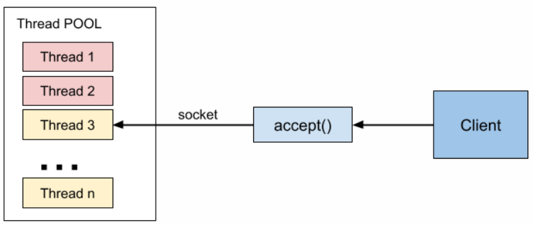
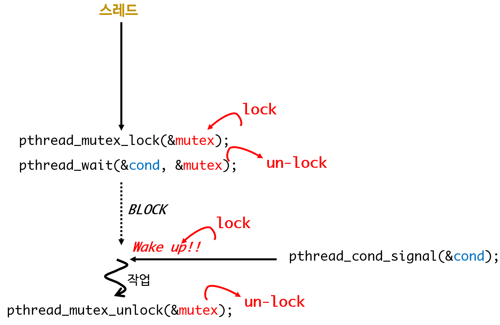

thread <3> Thread Pooling
조건 변수 이용 Thread Pool
개념
- thread pool?
- 미리 스레드를 할당시켜 놓는 기법
- 요청 -> pthread_create()의 반복은 생각보다 overhead
- 따라서 미리 100여 개의 스레드를 만들어 두고 연결하는 방식이라 생각하면 된다.
- 다중 접속 네트워크 프로그램
- 지정된 수만큼 미리 스레드 만듬

빨간 스레드: 작업 중인 스레드
노란 스레드: 휴식 중인 스레드
- accept()로 클라이언트 연결을 가져오면, 휴식 중인 스레드를 하나 깨운다. 이 때, 연결 소켓 get!!!
- 스레드 풀 구현에서 중요한 것
- 작업 지시가 있을때 까지 자식 스레드 블럭
- 자식 스레드는 pthread_cond_wait()로 부모 스레드가 깨울때까지 대기
- 부모 스레드가 깨우는 시점
- accept()함수가 반환하는 시점
- pthread_cond_ signal()을 이용해 자식 깨움
- 해당 자식 스레드 블럭이 풀려서 작업 중일 때는 해당 자식 스레드를 호출하지 않도록 할 것
- 해당 자식 스레드가 블럭이 풀려서 작업 중인 것을 어떻게 아는가?
- pthread_mutex_trylock()을 실시
- 부모 프로세스가 진입 가능함: 자식스레드는 노는 중
- 부모 프로세스 진입 불가: 자식 스레드 작업중 -> 호출 금지 
- pthread_mutex_trylock()을 실시
- 해당 자식 스레드가 블럭이 풀려서 작업 중인 것을 어떻게 아는가?
- 작업 지시가 있을때 까지 자식 스레드 블럭
자료구조
- 부모스레드와 자식스레드가 공유
- 이 자료구조는 자식 스레드 갯수만큼 생성해야 하므로 배열로 관리한다(cpp vector).
class ThreadInfo{
private:
pthread_cond_t mcond; "스레드가 사용할 조건변수"
pthread_mutex_t mmutex; "스레드가 사용할 뮤텍스"
int msocket;
public:
ThreadInfo(pthread_cond_t, pthread_mutex_t);
int TryLock(); "조건변수와 함께 사용할 뮤텍스 잠금을 얻기위한 메서드"
int Job(); "자식 스레드가 수행할 코드를 가진 메서드"
int UnLock(); "자식 스레드가 작업을 마치고 잠금을 되돌려주기 위해 사용"
};
vector<ThreadInfo> ThreadList;
스레드 풀 프로세스
- 스레드 풀 프로세스: 네트워크 서버
- 스레드 풀 만든다.
- 지정한 갯수만큼 스레드 풀 만든다.
- 메인 스레드와 자식 스레드는 ThreadInfo클래스로 조건변수와 뮤텍스를 공유한다.
- 스레드는 조건변수와 뮤텍스를 초기화 하고, Job메서드를 실행한다. Job메서드는 대략 다음과 같다.
Job(){
GetLock(&mutex); "잠금을 얻는다."
while(1){
"조건 변수로 기다린다. 조건 변수를 기다리면서 mutex잠금을 내놓으면,
부모 스레드는 mutex 잠금을 얻을 수 있는 상태가 된다.
이는 선택한 자식 스레드가 작업을 할 수 있는 상태를 의미한다."
pthread_cond_wait(&cond, &mutex);
"부모 스레드가 cond_signal을 전송하면, _cond_wait는 반환하고 잠금을 얻는다"
"작업을 한다."
"작업을 마치면, while 문 처음으로 가서 pthread_cond_wait를 호출한다."
}
}
- 작업을 하는 동안은 자식스레드가 뮤텍스 잠금을 얻은 상태이므로 부모는 trylock 메서드를 호출하는 것으로 이 스레드가 작업 중임을 알 수 있다.
- 작업을 마치면 다시 조건변수에서 기다린다.
- 반복 …
이 방식은 자식스레드가 잠금 권한을 가지고 실행하기 때문에, 동기화 문제에서 자유롭다는 장점을 가진다.
자식 스레드는 단지 pthread_cond_wait()를 호출할 때만 Unlock!!! 잠금을 내놓는다.
리얼 타임 시그널 thread pool
스레드 정보 구조체
struct ph{
int sockfd; // 처리 중인 소켓 지정번호
int index_num; // 스레드의 인덱스 번호
};
스레드 구조체 MAP
multimap<int, struct ph> phinfo;
struct schedul_info{
int client_num; // 총 연결중인 클라이언트 수
int current_sockfd; // 가장 최근에 연결된 소켓 지정 번호
phinfo mphinfo; // 스레드 구조체 multimap
};
스레줄관련 자료구조
{
현재 연결된 클라이언트 수
현재 처리해야될 클라이언트 소켓지시자
스레드 풀에 만들어진 스레드 상태: 스레드 풀 크기만큼의 배열
{
0 이면 휴식 상태
1 이면 작업 상태
처리 중인 소켓 지시자
}
};
main함수
{
아규먼트로 몇개의 스레드를 생성할지 받음
while(스레드 생성수만큼){
pthread_create를 이용해 스레드 생성
{ // 통신 스레드 함수
WAIT:
main 스레드가 깨우길 기다린다.
만약 main 스레드로 부터 깨움이 있다면
{
스케줄 자료구조 -> 현재 처리해야될 소켓 지시자를 읽어온다.
스케줄 자료구조 -> 자신의 상태를 1로 셋팅
스케줄 자료구조 -> 처리중인 소켓지시자를 셋팅
while(1)
{
클라이언트와 통신한다.
만약 에러가 발생하면
{
스케줄 자료구조 -> 처리 중인 소켓 지시자를 0으로 셋팅
스케줄 자료구조 -> 자신의 상태를 0으로 셋팅
스케줄 자료구조 -> 현재 연결된 클라이언트수 --;
goto WAIT:
}
}
}
}
}
}
// main 스레드
while(1)
{
만약 accept를 통해서 연결이 발생한다면
{
스케줄 관련 자료구조 -> 현재 연결된 클라이언트 수가 MAX를 초과하지 않았다면
{
스케줄 관련 자료구조 -> 현재 연결된 클라이언트 수 ++;
스케줄 관련 자료구조 -> 현재 처리해야될 클라이언트 소켓 지시자 = accept();
스케줄 관련 자료구조 -> 스레드 풀에 만들어진 스레드 상태가 0인 스레드를 찾아서 해당 스레드 깨움
}
초과 했을 경우
{
클라이언트에게 에러메시지를 전송한다.
}
}
}
- multimap의 key는 활성화 여부로 1, 0 이다. value는 스레드 정보가 될 것이다.
- multimap은 정렬연관 컨테이너로 key를 기준으로 자동적으로 정렬된다.
- 첫번 째 스레드가 처리중(1)으로 변경되면, 이 원소는 multimap의 가장 뒤로 정렬된다.
예제